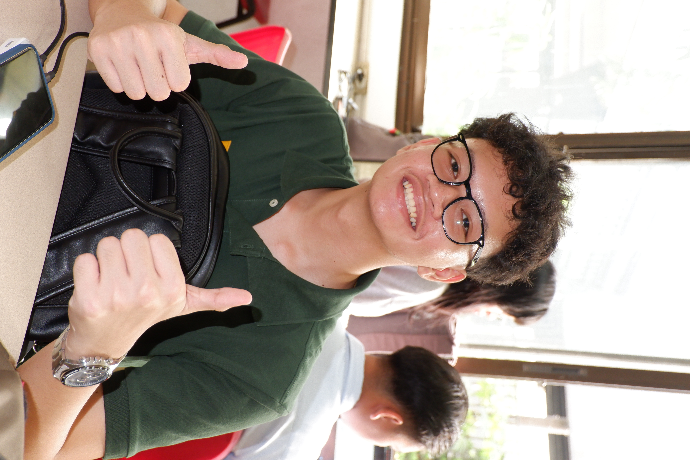
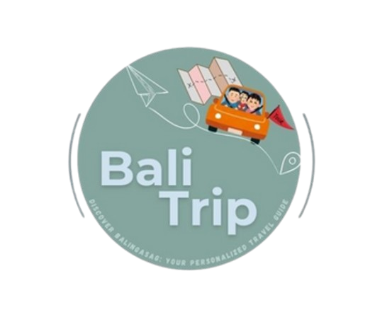

Kaixer Alvar
I'm a Computer Science student and developer. I build data-driven apps, decision support systems, and practical solutions.
Currently deepening my fundamentals and turning complex problems into clean solutions. Explore what I’m building and learning below.
This is my creative side. I tell stories through film, motion, and editing — from the first cut to the finishing details.
I’ve been editing for 10 years, with 5 years of professional work. Watch my showreel and explore the craft behind it.
01 — projects
GITHUB ↗
BaliTrip
AHP-based mobile recommender system that helps travelers make smarter decisions about destinations using the Analytic Hierarchy Process.
KiloWatch
Decision support system for optimizing appliance-level energy consumption. Helps households cut electricity costs with data-informed choices.
01 — showreel
OPEN VIDEO ↗Every frame tells a story.
Freelance editor and post-production specialist working across short film, music video, commercial, and 3D animation. Crafting narratives through motion, rhythm, and visual storytelling.
The video couldn’t play here. Open the original video ↗
How I got into editing
I've been editing since I was around 10 years old, just messing around with random gameplay footage and uploading videos on YouTube. It was more of a hobby back then, just trying things out and having fun. During the pandemic, I came across AMVs (anime music videos), and that's when I really got into editing seriously. I started learning more about motion graphics, 3D animation, and eventually got comfortable with the software I still use today. After that, I began taking on commissions, from classmates at first, then eventually international clients. I kept doing it consistently over the years, improving with every project. Now, I'm at a point where I'm doing way more than I ever thought I could when I first started.
“When given an opportunity, deliver excellence and never quit.”— Robert Rodriguez
04 — about
I'm Kaixer Emmanuel Oscar Antonio M. Alvar, a first-year Computer Science student based in the Philippines. I'm drawn to the intersection of data, decision-making, and real-world impact — two of my projects already tackle recommender systems and energy optimization. I'm currently deepening my fundamentals and looking for opportunities to build more.
Actively learning and building — passionate about decision support systems, data-driven apps, and turning complex problems into clean solutions.
- Location
- Philippines
- Status
- 1st Year CS
- Focus
- DSS · Data Analysis · Mobile Application Development
- Availability
- Open to opportunities
05 — education
Alangilan, Batangas City
2025 – Present
Balingasag, Misamis Oriental
2019 – 2025
2018 – 2019
2013 – 2018
06 — stack & tools
Development
Editing & design
03 — services
START A PROJECT ↗Video Editing
Narrative-driven cuts that serve the story, from rough assembly to picture lock with meticulous attention to rhythm and pacing.
Color Grading
Building a consistent visual language with intentional color work that elevates mood and draws viewers deeper into the story.
Sound Design
Audio mixing, SFX layering, and music sync to create immersive soundscapes that support the edit's emotional arc.
Motion Graphics
Clean, purposeful motion, from lower thirds to full title sequences, designed to complement, not overshadow.
Social Content
Fast-turnaround short-form content optimized for Reels, TikTok, and YouTube Shorts. Hook-first editing that retains attention.
Post-Production
Full post-production pipeline from raw footage to export-ready deliverables across multiple formats and platforms.
Editing packages
Basic Edit
Up to 5 min · Basic color correction · Music sync
1 revision · 3–5 day turnaround
Standard
Up to 15 min · Color grading · Sound design & mix · Motion graphics
2 revisions · 5–7 day turnaround
Premium
Unlimited output length · Advanced grading · Full sound design
Complex motion graphics · Basic VFX · 3 revisions · 7–14 days
Base prices only. The final quote depends on project complexity, footage volume, and urgency. No payment now — I’ll confirm the details and price before starting.
07 — highlights
- National Science and Engineering Fair 2025 – Finalist & Overall 5th Grand Awardee (AXIAA Hotel, Quezon City) – developed and presented BaliTrip, a travel decision-support application utilizing the Analytical Hierarchy Process (AHP).
- Best Research – PANUKIDUKI 2024 & Plaque of Research Excellence – recognized for producing a high-quality study involving statistical analysis, critical thinking, and structured research design.
- Completed seminars on Mathematical Epidemiology (USBaW) and Statistical Inference & Hypothesis Testing – strengthened skills in data interpretation, modeling, and analytical reasoning.
- Served as a Workshop Facilitator – led academic sessions demonstrating ability to explain complex concepts clearly and collaborate in team environments.
- Awarded Best in Communication Skills (PASUNDAYAG 2024) – recognized for excellence in formal public speaking.
- Awarded Best Editor (PASUNDAYAG 2024) – demonstrated strong video editing skills, attention to detail, and multimedia production ability.
- Graduated With Honors (S.Y. 2022–2025) – consistent academic performance with a focus on analytical and problem-solving disciplines.
08 — say hello
For work, collabs, or a project you have in mind — drop me a line.